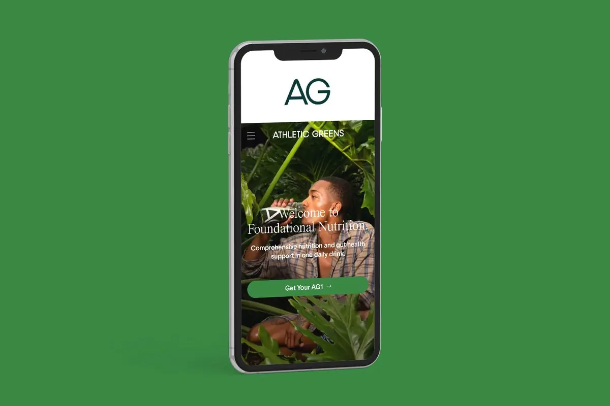

Как Athletic Greens рекламируется в подкастах: стратегия из первых уст
Athletic Greens gives us the scoop on its podcast advertising strategy
Оригинал: Marketing Brew ↗Резюме
Директор по выручке Athletic Greens Джонатан Корн объясняет, как бренд покупает рекламу в подкастах. Кого из ведущих берут, почему не уходят от них даже в кризис, как считают отдачу без современной аналитики. В конце Корн говорит, что подкасты отходят на второй план: с теми же авторами бренд теперь работает сразу на нескольких платформах.
Главное
- По данным Podscribe, за год Athletic Greens стал третьим рекламодателем в подкастах по числу шоу, после BetterHelp и Manscaped. Ведущих у бренда «сотни».
- Подкастами занимается своя команда партнёрств из пяти человек. Стратегию Корн называет «игрой вдолгую»: размещения стараются не отменять даже в спад.
- Ранние партнёры входят в компанию: Тим Феррис стал инвестором, Эндрю Хуберман — медицинским советником.
- Реклама, которую ведущий начитывает сам и «вшивает» в выпуск (baked-in), работает лучше динамических вставок. На программатик уходит малая часть бюджета.
- Персональные ссылки с UTM-метками занижают отдачу, поэтому к ним добавляют опросы после покупки и чутьё команды.
- Одного упоминания мало: аудитории нужно услышать рекламу несколько раз. Когда отдача выходит на плато, меняют частоту или креатив.

Мы поговорили с директором по выручке (CRO) компании Джонатаном Корном (Jonathan Corne) о партнёрствах бренда с «сотнями» подкастеров.
Если вы слушали хотя бы один подкаст, то, скорее всего, слышали об Athletic Greens.
Компания продаёт AG1 — пакет зелёного порошка за 99 долларов, который задуман как «комплексное питание и поддержка здоровья кишечника в одном ежедневном напитке». С 2015 года — а особенно активно в последние несколько лет — бренд продвигает продукт в том числе через спонсорство подкастов со звёздными ведущими: Даксом Шепардом (Dax Shepard) и Моникой Падман (Monica Padman) из Armchair Expert, а также автором книг о бизнесе Тимом Феррисом (Tim Ferriss). Они сами рассказывают слушателям об AG1.
Сейчас Athletic Greens одновременно работает с «сотнями» подкастеров, рассказал Marketing Brew Корн. По данным сервиса расшифровки и аналитики подкастов Podscribe, за последний год компания стала третьим крупнейшим рекламодателем в подкастах по общему числу шоу — после BetterHelp и Manscaped.
Суть подкаст-стратегии Athletic Greens — «игра вдолгую», говорит Корн. Для этого у бренда есть собственная команда партнёрств из пяти человек, которая в том числе отвечает за вложения в подкасты.
Определить отношения
Athletic Greens не ищет мимолётных связей с подкастерами, поэтому выработал подход к выбору тех, с кем хочет работать всерьёз и надолго.
Когда Корн в одиночку вёл подкаст-рекламу Athletic Greens, он тестировал канал так: писал тем подкастерам, которых сам в тот момент слушал. Со временем стратегия сместилась к поиску правильной аудитории — в основном людей, которые «берут на себя ответственность за своё здоровье, личные финансы, отношения», объясняет Корн.
Феррис, ведущий бизнес-подкаста The Tim Ferriss Show, был одним из первых подкастеров, кто продвигал Athletic Greens (первую любовь не забывают). Теперь он инвестор компании, рассказал нам Корн. Нейробиолог и доцент Стэнфорда Эндрю Хуберман (Andrew D. Huberman), ведущий подкаста Huberman Lab, продвигает бренд около двух лет и стал медицинским советником компании, добавил Корн.
Среди других заметных долгосрочных партнёров Athletic Greens — Шепард, Рич Ролл (Rich Roll) из The Rich Roll Podcast и Эмили Аббате (Emily Abbate) из Hurdle. Все эти шоу хотя бы как-то связаны со здоровьем и благополучием, поэтому естественно подходят бренду. Например, Armchair Expert в Spotify отнесён к категориям «знаменитости» и «комедия», но Шепард часто рассказывает о своём личном пути к здоровью, пояснил Корн.
Если ведущий попал в ротацию, Athletic Greens принципиально старается не разрывать с ним отношения — даже во время экономических спадов.
Чего мы не хотим, так это что-то отменять. Мы хотим быть уверены, что остаёмся, потому что хотим выстраивать всё больше и больше отношений.
— Джонатан Корн
Впрочем, когда аудитория уже насыщена, Athletic Greens может сократить рекламный бюджет. Бренд работает с Pod Save America с марта 2020 года, но сейчас размещения там идут с перерывами: бренд уже «довольно плотно охватил эту аудиторию», говорит Корн.
Сколько времени нужно, чтобы дойти до этой точки, зависит от конкретного случая, но обычно Корн понимает, что пора менять частоту или креатив, когда «отдача выходит на плато», написал он нам по почте.
Как измерить год в подкасте?
Бренд пробовал и динамически вставляемую рекламу, и «вшитую» — начитанную ведущим прямо в выпуске, — и выяснил, что вшитая обычно работает лучше. Команда партнёрств также экспериментировала с программатик-закупкой (автоматической покупкой рекламы через платформы) в подкастах, но это «небольшая часть нашего портфеля», написал Корн.
Поскольку Athletic Greens пришёл в подкаст-рекламу ещё до того, как широко распространились инструменты аналитики вроде Podsights от Spotify, компания привыкла отслеживать эффективность по старинке.
Athletic Greens использует персональные короткие ссылки (vanity URL) с «UTM-метками, чтобы отслеживать цифровые события по каждому шоу» — например, посещения сайта и конверсии, пояснил Корн. Но такой метод даёт «консервативную картину» эффективности кампании: слушатели могут перейти по персональной ссылке не сразу — или вообще не перейти, — даже если в итоге совершат покупку.
Поэтому для «более творческой стороны атрибуции» (то есть определения, какой канал принёс продажу) Athletic Greens опирается на опросы после покупки и другие опросы клиентов, а также на «профессиональное чутьё» команды партнёрств, написал Корн.
По словам Корна, внимательный анализ подкаст-кампаний — и по всем жёстким метрикам-аббревиатурам (CPM — стоимость тысячи показов, CTR — кликабельность, CVR — конверсия, CAC — стоимость привлечения клиента), и по более мягким показателям вроде качества и глубины отношений — помог Athletic Greens выявить закономерности, на которых построена нынешняя стратегия.
Например, Корн понял, что в подкаст-рекламе ключевую роль играет частота: иногда аудитории нужно «несколько прочтений рекламы, чтобы познакомиться с брендом», сказал он нам.
Хотите верьте, хотите нет, но подкаст-кампании сейчас «уходят с первого плана — не потому, что мы сократили вложения, а потому, что просто изменили микс каналов», говорит Корн.
Теперь бренд делает ставку на работу с ведущими подкастов и другими инфлюенсерами, чтобы выходить на их аудитории на разных платформах, а не выстраивать доверие и узнаваемость одной лишь рекламой в подкастах.